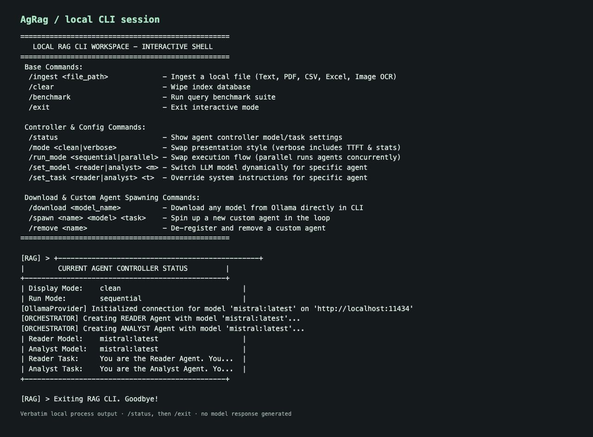
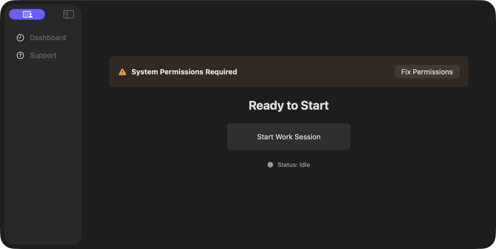
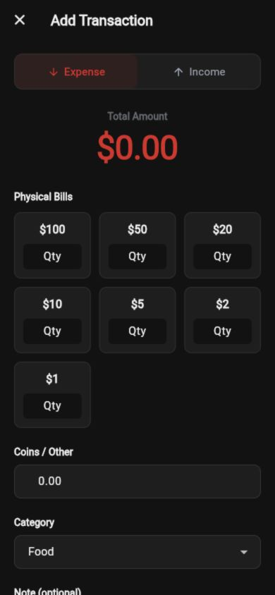
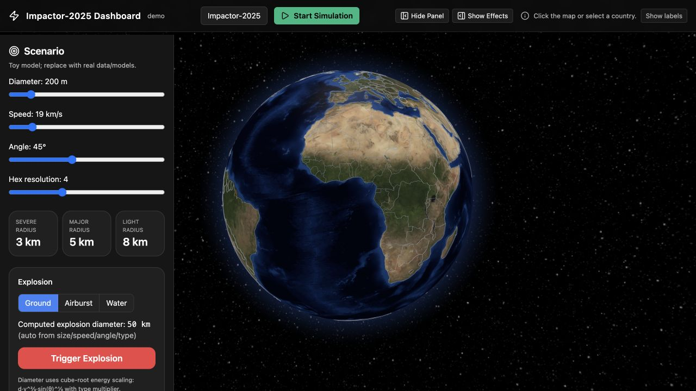
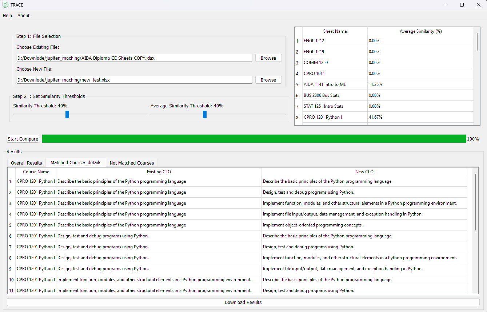
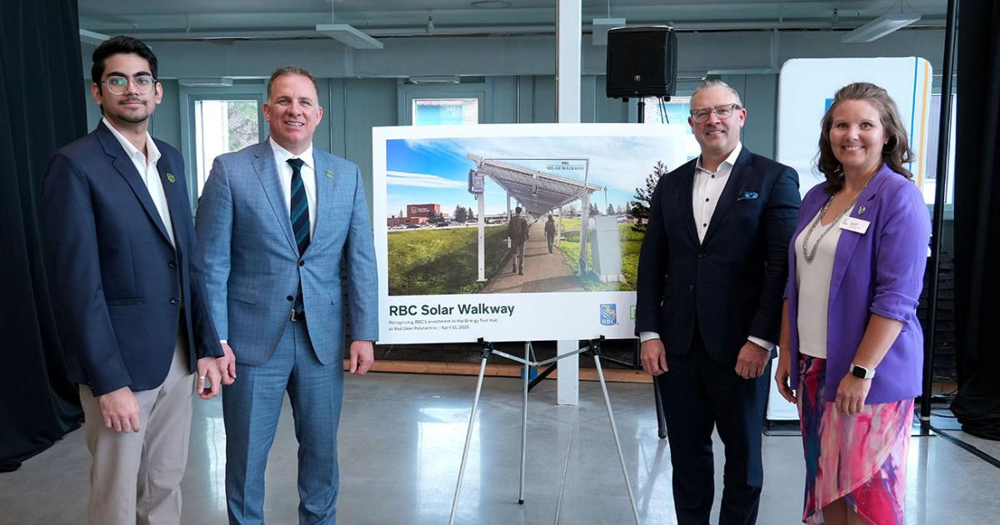
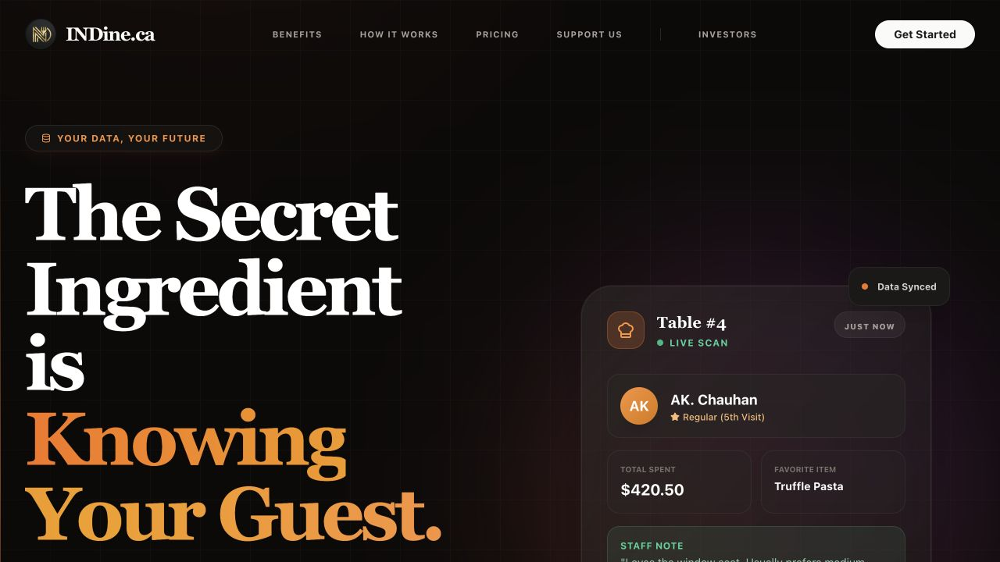
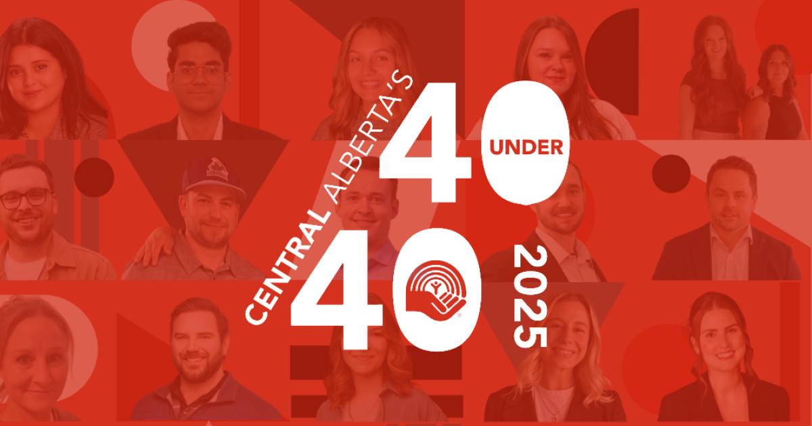

Verbatim CLI session · local execution01 / SELECTED WORKAgRag
One question, several perspectives. A local command-line RAG system with document ingestion, shared agent memory, and configurable model routing.
RESEARCH · SOFTWARE · ENTREPRENEURSHIP
Scientific Data Analyst, Software Developer, and Founder at Xun Innovation.
I’m Akshun Chauhan. I connect data, software, and a researcher’s curiosity to build things that move us forward.
01 / SELECTED WORK
From campus maps to planetary defence.
Local AI, native apps,
and the tools that connect them.
11 SELECTED PROJECTS Swipe to explore ↔

Verbatim CLI session · local execution01 / SELECTED WORKOne question, several perspectives. A local command-line RAG system with document ingestion, shared agent memory, and configurable model routing.

Native macOS app · idle dashboard02 / SELECTED WORKFrom a work session to a readable report. A native macOS app with session controls, permission checks, and PDF generation.

Original Flutter app · transaction form03 / SELECTED WORKA quieter way to keep track of cash. A Flutter app for transactions, denomination inventory, and IOUs, designed to work offline.

Live project capture · October 202604 / SELECTED WORK1st place · NASA Space Apps EdmontonMaking a planetary threat understandable. An interactive asteroid impact simulator with a 3D Earth and AI-assisted mitigation planning.

Original desktop application screenshot05 / SELECTED WORKComparing course learning outcomes by meaning, helping educators see what changed across a curriculum.
 Original repository demo · sample indoor map06 / SELECTED WORK
Original repository demo · sample indoor map06 / SELECTED WORKFind the room, then find the route. Interactive campus maps with shortest-path navigation between classrooms and facilities.
Different problems. Different ways of building.
THE REST OF THE WORKBENCH
I’m interested in what happens when we connect disciplines — and give good ideas the engineering they deserve.
I work at the intersection of applied research, data, and software. At Red Deer Polytechnic, I connect IoT sensors, cloud infrastructure, and analysis to help make sense of energy systems. Alongside that work, I build applications and explore how AI can turn complex information into something people can use.
ON MY WORKBENCH NOWWorking on energy innovation at Red Deer Polytechnic, exploring local AI and document intelligence, and building Xun Innovation and INDine.ca.
More of my story ↗IoT data pipelines, energy systems, Python, PostgreSQL, and Power BI.
React, TypeScript, backend services, desktop applications, and Azure.
Semantic search, local RAG, document intelligence, and practical automation.
EXPERIENCE & THE NEXT CHAPTER

Working where physical systems, research data, and useful software meet.
At the Energy Test Hub announcement ↗Photo: Red Deer PolytechnicBuilding reliable research data environments, automating IoT and API data pipelines, and turning unstructured measurements into SQL-ready datasets.
Built ETL pipelines, analyzed solar efficiency, and created Power BI dashboards and data access tools for researchers and industry partners.

Custom software, web experiences, and practical AI automation for businesses in Central Alberta.
QR guest check-in, restaurant guest insights, and email automation that helps bring people back.
IDEAS INTO BUSINESSES
Practical software.
For the people running the business.
 Live website capture · October 2026 ↗
Live website capture · October 2026 ↗Through my company, Xun Innovation, I build custom software, websites, AI systems, and automation for businesses. Based in Central Alberta, the company connects practical engineering with the day-to-day problems of running and growing a business.

Live website capture · October 2026 ↗I’m building INDine.ca to help restaurants turn a visit into a lasting guest relationship. QR check-in, guest insights, and automated email campaigns connect the dining room with the next visit.
03 / PROGRESS & RECOGNITION
Learning by doing.
Growing by taking on the next challenge.
RESEARCH PRESENTATIONS & PUBLIC SPEAKING
Research shared.
Methods, findings, and conversations.
Energy Test Hub announcement · Red Deer Polytechnic, Red Deer, Alberta
4th Annual Research Showcase · Red Deer Polytechnic, Red Deer, Alberta
Alberta Corridor Technical Symposium · NAIT, Edmonton, Alberta
04 / IN GOOD COMPANY
Published LinkedIn recommendations. Open a card to read the complete recommendation.
05 / NOTES FROM THE JOURNEY
Published stories, press mentions,
and moments worth sharing.
 LinkedIn
LinkedInRDP’s LinkedIn article celebrates the employees and alumni included in the 2025 honourees.
Read the story ↗
RecognitionNamed among RDP’s employees and alumni recognized in the 2025 Top 40 Under 40.
Read the story ↗A profile connecting my applied research, mentorship, and involvement in the startup community.
Read the story ↗RDP recognizes its employees and alumni in the 2025 honourees, including my work in Applied Research.
GenNext Central Alberta / Community mentionA community spotlight on my work in applied research and supporting student innovators.
Selected public stories · Reviewed Oct 22, 2026 · Latest activity on LinkedIn ↗
A DIFFERENT WAY TO EXPLORE
Ask my portfolio guide about my work, experience, or what I’m building.
GOOD WORK STARTS WITH A CONVERSATION
Good ideas start
with a conversation.
Answers from this portfolio · Your questions stay in this browser